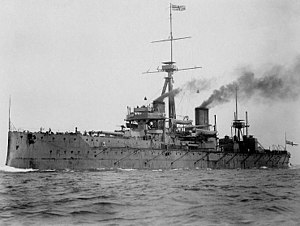

DreadnaughtThe dreadnought was the predominant type of battleship in the early 20th century. The first of the kind, the Royal Navy's HMS Dreadnought, had such an effect when launched in 1906 that similar battleships built after her were referred to as "dreadnoughts", and earlier battleships became known as pre-dreadnoughts. Her design had two revolutionary features: an "all-big-gun" armament scheme, with an unprecedented number of heavy-calibre guns, and steam turbine propulsion.[a] As dreadnoughts became a crucial symbol of national power, the arrival of these new warships renewed the naval arms race between the United Kingdom and Germany. Dreadnought races sprang up around the world, including in South America, lasting up to the beginning of World War I. Successive designs increased rapidly in size and made use of improvements in armament, armour, and propulsion throughout the dreadnought era. Within five years, new battleships outclassed Dreadnought herself. These more powerful vessels were known as "super-dreadnoughts". Most of the original dreadnoughts were scrapped after the end of World War I under the terms of the Washington Naval Treaty, but many of the newer super-dreadnoughts continued serving throughout World War II. Dreadnought-building consumed vast resources in the early 20th century, but there was only one battle between large dreadnought fleets. At the Battle of Jutland in 1916, the British and German navies clashed with no decisive result. The term "dreadnought" gradually dropped from use after World War I, especially after the Washington Naval Treaty, as virtually all remaining battleships shared dreadnought characteristics; it can also be used to describe battlecruisers, the other type of ship resulting from the dreadnought revolution.[1] The distinctive all-big-gun armament of the dreadnought was developed in the first years of the 20th century as navies sought to increase the range and power of the armament of their battleships. The typical battleship of the 1890s, now known as the "pre-dreadnought", had a main armament of four heavy guns of 12-inch (300 mm) calibre, a secondary armament of six to eighteen quick-firing guns of between 4.7-and-7.5-inch (119 and 191 mm) calibre, and other smaller weapons. This was in keeping with the prevailing theory of naval combat that battles would initially be fought at some distance, but the ships would then approach to close range for the final blows (as they did in the Battle of Manila Bay), when the shorter-range, faster-firing guns would prove most useful. Some designs had an intermediate battery of 8-inch (203 mm) guns. Serious proposals for an all-big-gun armament were circulated in several countries by 1903.[2] |
|